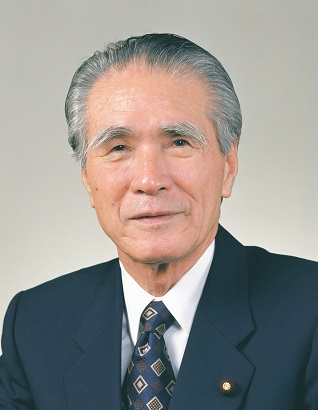
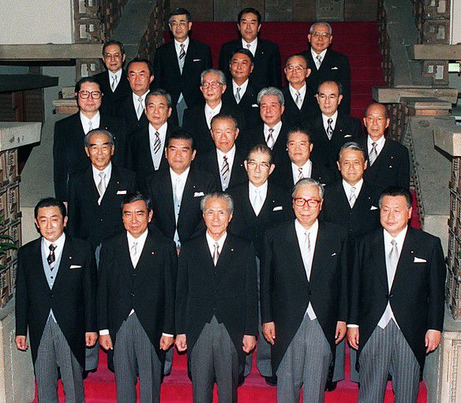
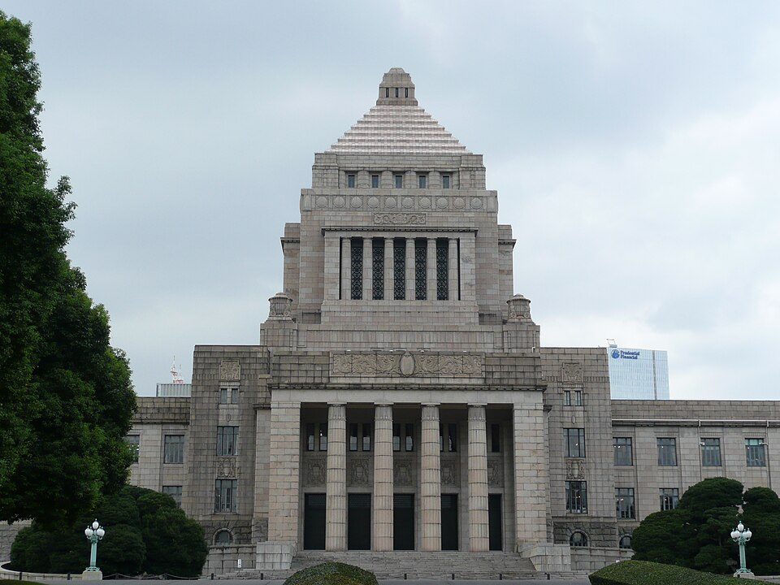
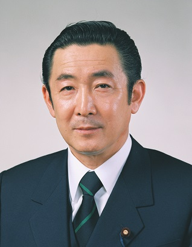
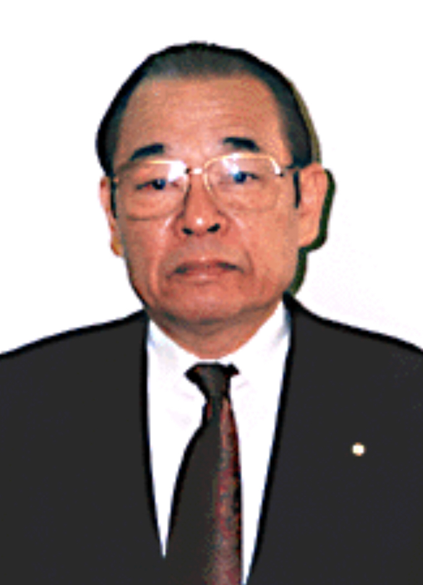

村山富市
むらやま・とみいち
内閣総理大臣
役割：公的資金を含む住専処理方策を閣議決定
その後：その後は元首相。処分・判決なし8
1971〜2011年
住宅金融専門会社（住専）7社は、銀行本体が住宅ローンへ進出した後、不動産業者向け融資を拡大し。バブル崩壊後に巨額の不良債権を抱えた。1
政府は1995年12月19日に住専7社の清算と、母体行・一般金融機関・農林系金融機関・政府による損失分担を決定した。2
1996年の住専国会では、住専を総量規制の対象外とした行政判断、母体行の関与、大口借り手の資産移転。納税者負担の順序が争点となった。3

住専は、都市銀行・信託銀行・生命保険会社などを母体行として1971〜76年に設立された。銀行本体から個人向け住宅ローンを間接的に供給する役割を想定されたが、銀行自身が住宅ローンへ進出すると、住専は本来の個人向け住宅金融から不動産業者向け融資へ業務を広げた。7社の融資残高は1980年度末の約3.3兆円から1988年度末の約7.4兆円、1990年度末には12.4兆円に達した。地価上昇を前提に担保価値を評価し、借り手の返済能力より不動産価格に依存する融資構造が形成された。1
その後、いわゆるバブル経済が崩壊し、株価が下落するとともに地価が下落し、地価は平成三年を頂点に大幅に下落（例えば、平成四年ないし六年の地価下落率は、東京都区部の住宅地においてそれぞれ一三・三パーセント、二二・二パーセント、一四・六パーセントであり、東京都区部の商業地においてそれぞれ八・七パーセント、二二・五パーセント、二三・七パーセントであった。）した（甲二九、四九、五〇）。 右のバブル経済崩壊による地価の下落は、不動産担保融資を主体としていた住専各社の経営に深刻な影響を与え、特に急激に拡大していた事業者向け融資債権の不良債権化をもたらし、平成三年度以降、住専各社の財務状況は急激に悪化することとなった（甲六の３２）。 大蔵省は、平成三年八月から平成四年八月にかけて住専各社に対する立入調査（以下「第一次立入調査」という。）を行い、その結果、住専七社の不良債権総額は合計四兆六四七九億円、不良債権率は約三七・八パーセントであることが判明した（甲二九）。
意味：裁判所が、地価下落や不動産担保融資と事業者向け融資及び不良債権化の因果を事実認定として記述している。［裁判所PDF p.32］
1990年3月、大蔵省は不動産融資総量規制を通達したが、住専は対象外とされた。1996年の国会では、母体行が住専を経由して銀行融資を拡大したのではないか、行政がその経路を把握しながら制限しなかったのではないかが追及された。母体行は住専を設立し、役員を派遣し、融資案件を紹介したと説明された。住専の借入金では農林系統からの比率が7社合計42.2％に達し、農林系金融機関の責任も処理負担の争点になった。21
1991年以降、バブル崩壊と地価下落によって不動産担保の価値が下がり、事業者向け融資債権が不良債権化した。大蔵省の立入調査では、住専7社の不良債権総額が4兆6479億円、不良債権率が約37.8％とされた。1993年頃には母体行の金利減免などを柱とする第二次再建計画が作られたが、東京高裁判決が引用する事実関係では、大蔵省担当者がこの計画を「作文」と表現したとされる。再建計画が抜本処理ではなく時間を得る措置だったのかが、行政責任の論点になった。34
1995年の立入調査後、末野興産、桃源社、麻布建物、アイ・イー・イー・インターナショナル。光進などが大口借り手として浮上した。5月30日の政府答弁では、末野興産への住専5社の融資は2368億円で、1873億円が損失見込みとされた。桃源社への住専4社の融資は728億円で、611億円が損失見込みだった。大阪地裁は、末野興産について、1991年頃から支払いを極力停止し。多数のグループ会社へ預金や不動産名義を移転する資産隠匿行為を行ったと認定した。桃源社については、家賃回収会社を介した強制執行免脱の可能性が国会で指摘されたが、最終的な刑事認定は本資料で未確認である。56
1995年12月19日、村山内閣は住専7社を清算し、母体行が約3兆5000億円、一般金融機関が約1兆7000億円を放棄し、農林系金融機関が約5300億円を贈与し。政府が6800億円を支出する枠組みを閣議決定した。政府は預金保険機構に50億円を出資し、住宅金融債権管理機構を設立して住専資産を移管する方針も決めた。村山首相は、処理を先延ばしすれば金融界の混乱を招くとして、公的資金投入への理解を求めた。一方、納税者より先に融資を決めた金融機関が責任を負うべきだという反対意見が強く示された。78
〇総理 夜分、大変恐縮に思いますけれども、先ほど閣議で決定をいたしました。この際声明を出すという話もございましたけれども、文章で出すよりも、自らの言葉で語った方が御理解がいくのではないかということもございまして、記者会見を行うことにいたしました。御理解をいただきたいと思います。 いわゆる住宅金融専門会社七社のバブル崩壊後の不良資産の処理についてどうするかということで、春ごろからその住専に関係した団体、企業、それから政府与党等で真剣な検討と協議を今日まで続けてまいりました。 その結果、我が国の金融システムについて、国内外の信頼を回復すると。同時にまた、景気対策上からもこれ以上先延ばしをすれば、更に傷口を大きくし、金融界の混乱を招きかねないということから、最終的にぎりぎりの苦汁の選択として、多額の公的資金を導入せざるを得ないという結論に達したことについて、国民の皆さんの御理解をいただきたいということでございます。
意味：政府が公的資金投入を「苦汁の選択」と位置付け、金融システムへの波及回避を理由に国民へ理解を求めた。［会見全文］
1996年1月召集の第136回国会は、住専処理予算をめぐって「住専国会」と呼ばれた。政府は金融システムの安定、預金者保護、国内外の信頼維持を理由に公的資金投入を説明した。野党は、総量規制の対象外とした行政判断、母体行による役員派遣と迂回融資。旧大蔵省出身者の責任を追及した。5月には末野興産・桃源社関係の資産隠し、競売妨害、脱税などの捜査が論点となり。法務省は桃源社について本格的な捜査が開始されたと答弁した。6月時点で政府答弁が示した実人員は、末野興産関係4人、桃源社関係4人だった。95
○一井淳治君 ところが、最近まで我々が接している情報によりますと、末野興産あるいは桃源社関係の二件のみで、まだまだ刑事責任の追及が本格化していない、非常に進んでいないという不満な気持ちでいっぱいでございます。逮捕者が何人ぐらいであるのか等の現状を捜査当局の方から、捜査の責任者の方から御説明をいただきたいと思います。 ○政府委員（原田明夫君） いわゆる住専関係の事件につきましては、御指摘のとおり、末野興産関係で現在延べ十二名、桃源社関係で四名、合計十六名を検察といたしまして受理いたしております。なお、この人数には同一人物を再逮捕するなどしているために、実人員といたしましては、末野興産関係で四名、桃源社関係で四名となっております。なお、鋭意捜査は継続中ということでございます。
意味：国会議員の「本体に達していない」という不満に対し、法務省側は捜査人数を示しながらも継続中と答えた。［国会会議録］
処理方策をめぐる対立は、金額の大きさだけではなく、誰が先に責任を負うべきかという順序に及んだ。政府は民間金融機関に債権放棄や資金贈与を求めた上で、金融システムの安定に必要な公的資金を投入すると説明した。野党は、住専を設立し役員を派遣した母体行、大蔵省の監督。融資を受けた大口借り手の責任がなお不十分だと追及した。農林系金融機関については、系統金融の破綻回避を理由に負担を求める政府側と、主たる責任は母体行にあるとする側の見解が対立した。国会では大口貸出先の実名、融資額、損失見込みが示され。処理資金の出所と債権回収の進め方が同時に審議された。処理法成立後も、資産回収が終了するまで二次損失の負担額は確定しなかった。金融制度調査会は、公的資金の導入を含む臨時異例の措置を容認しながら、住専と関係金融機関、借り手。行政当局の責任を明確にすることを求めた。10111
1996年6月18日に住専処理法が成立し、7月26日に住宅金融債権管理機構が発足した。機構は住専7社の資産6兆1129億円を引き継ぎ、後に整理回収機構へ統合された。現預金と営業用資産を除いた譲受け資産4兆8909億円について、2011年11月30日までに3兆3167億円を回収し、残存債権等1725億円を他勘定へ移管した。二次損失は1兆4017億円となり、政府と民間金融機関が各7009億円を負担した。住専問題の制度上の処理は1996年に進んだが、債権回収と損失処理は15年にわたり継続した。処理機構は債務者の財産調査と担保不動産の処分を担い、住専の融資判断を後から検証する役割も負った。回収額と残存債権を差し引いて二次損失を確定するまで、当初の処理方策の負担額だけでは最終結果を表せなかった。117
住宅金融債権管理機構（現在の整理回収機構）が、平成８年に引き受けた住専資産６兆1,129 億円から現預金と営業用資産を除いた金額は４兆8,909 億円である。このうち、平成23 年11 月30日までに３兆3,167 億円を回収し（簿価超回収益を除く。）、平成23 年11 月30日に整理回収機構住専勘定に残存する債権等1,725 億円（引当金控除後）を、整理回収機構の他の勘定（協定後勘定）へ移管させた。これにより整理回収機構住専勘定における住専債権の回収等は完了したこととなり、住専債権の回収等に伴い生じた二次損失は、譲受け資産（現預金、営業用資産を除く。）４兆8,909 億円から回収額３兆3,167 億円及び移管した残存債権等1,725 億円を差し引いた１兆4,017 億円となり、平成８年１月の閣議了解及び特定住宅金融専門会社の債権債務の処理の促進等に関する特別措置法（以下「住専処理法」という。）に基づき、政府と民間金融機関の負担額は、それぞれ7,009 億円（二分の一ずつ）となった。
意味：最終回収と残存債権、二次損失、官民負担額が確定値で並ぶ。［金融庁PDF p.11］
住専問題では、住専経営者、大口借り手、母体行、一般金融機関、農林系金融機関、行政当局、処理機構のそれぞれについて、融資決定、監督、回収。負担の責任が問われた。末野興産事件の会社更生手続開始や1999年10月27日の大阪地裁判決の存在は確認できるが、被告人名、罪名、量刑、控訴審。確定日は本調査で未確認である。桃源社関係も、1996年時点の捜査状況は確認できるが、全被告の確定判決は確認できていない。総会屋、仕手筋、海外口座、個別の政治献金還流についても。公的資料で具体的関係は確認できない。これらの未確認事項は、確定した事実と捜査中の事項を区別するために残されている。129
○一井淳治君 私が聞いているのは、本体であります住専を対象にした場合にどういう罪名が考えられるかということを聞いているわけです。 ○政府委員（原田明夫君） これは委員御承知のことで大変恐縮でございますけれども、やはり刑事事件の責任ということになりますと、実態的に北景となる事実、実際の社会的な事実を確定してまいりませんと、最終的にどのような罰条を適用されるかということについては今明らかにできない面があろうかと思います。 （中略） ○一井淳治君 子供を相手に時間つぶしをやっておるんじゃないんです。一分間でも国民の期待にこたえて刑事責任を追及するという立場に立たないと、今のような話を聞いているとがっかりすると思うんです、本当に。納税者の人たちは、これでは悪が眠るな、巨悪がこのまま眠っていくなという心配を持つと思います、私は率直に言いまして。 ○政府委員（原田明夫君） 先ほど御答弁申し上げましたとおり、背任ということも十分念頭にあると思います。しかし、まず罪名があって、それに基づいて捜査するものではございませんので、その点は法務当局の答弁としては御了承いただきたいと存じます。
意味：住専本体の刑事責任を問う議員と、具体的事実の確定を先行させる検察側の立場が正面衝突している。［国会会議録］


| 国会議事堂 | 東京都千代田区永田町1-7-1 | 住専国会の審議場所 | 18 |
| 財務省庁舎 | 東京都千代田区霞が関3-1-1 | 当時の大蔵省所在地 | 19 |
| 日本銀行本店 | 東京都中央区日本橋本石町2-1-1 | 金融システム安定化・資金供与に関係 | 20 |
| 東京地方裁判所 | 東京都千代田区霞が関1-1-4 | 住専関連民事事件の裁判所 | 21 |
| 大阪地方裁判所 | 大阪府大阪市北区西天満2-1-10 | 末野興産更生事件の裁判所 | 22 |
| 整理回収機構本店 | 東京都千代田区丸の内3-4-2 | 住専債権回収の後継機関 | 11 |
住専7社は母体行などから資金と融資案件の紹介を受け、不動産業者向け融資を拡大した。地価下落後、住専資産は住宅金融債権管理機構へ移管され、政府・金融機関の負担と債権回収で処理された。111

むらやま・とみいち
内閣総理大臣
役割：公的資金を含む住専処理方策を閣議決定
その後：その後は元首相。処分・判決なし8
たけむら・まさよし
大蔵大臣
役割：財政資金投入・金融機関負担を調整
その後：処分・判決は未確認14

はしもと・りゅうたろう
1996年首相
役割：住専国会で処理策を推進
その後：処分・判決なし7

くぼ・わたる
大蔵大臣
役割：損失額・処理根拠を国会答弁
その後：処分・判決なし10
なかぼう・こうへい
住宅金融債権管理機構社長
役割：住専資産の回収責任者
その後：その後の懲戒・責任の詳細は未確認7
すえの・けんいち
末野興産代表取締役
役割：大口借り手。資産隠しの経営方針を大阪地裁が認定
その後：1999年の刑事量刑は本調査で未確認6
ささき・きちのすけ
桃源社社長
役割：大口借り手。資産・家賃回収をめぐり国会で追及
その後：刑事確定判決は未確認5
はらだ・あきお
法務省政府委員
役割：桃源社関係の捜査状況を答弁
その後：後に検事総長5
政府委員
役割：大口貸出先・損失見込みを答弁
その後：処分・判決なし5
のろた・ほうせい
農林水産大臣
役割：農林系統の負担・貸し手責任をめぐる政府側当事者
その後：処分・判決なし23
おち・みちお
与党プロジェクト座長
役割：母体行に処理責任を求めた政治側キーパーソン
その後：処分・判決なし3
まつした・やすお
大蔵大臣・日本銀行総裁
役割：金融行政・金融システム安定化の当事者
その後：処分・判決なし14
住宅金融専門会社
役割：不動産業者向け融資を拡大し不良債権を抱えた
その後：清算。資産を住宅金融債権管理機構へ譲渡1
行政当局
役割：総量規制、立入調査、再建計画を担当
その後：金融検査・監督の見直しを公表14
債権回収機関
役割：住専資産を引き継ぎ回収を実施
その後：整理回収機構へ統合11
国会議員
役割：末野興産・桃源社の回収と捜査を追及
その後：本調査で処分・判決は未確認5
相関図は、住専の融資拡大、行政の監督と処理方策、大口借り手への融資、資産回収。国会での追及を示す。闇の人脈に関する線は、調査メモの認定・指摘・報道・疑惑の区別を維持している。
上司と部下。村山内閣の下で武村蔵相が住専処理案を所管し、1995年12月19日の閣議決定に至った。役割分担は政府資料で確認できる。日本銀行年表14
対立・確執。村山首相は債権回収と不正行為の責任追及を表明したが、個別の面談・私的関係は未確認。首相会見8
対立・確執。農林系金融機関の負担を「贈与」とする処理をめぐり、貸し手責任と負担割合が争点になった。財務省1
上司と部下。母体行が住専を設立し役員を派遣して経営に関与したと国会で追及された。衆議院本会議10
庇護・口利き。再建計画を作成させ、破綻処理を遅らせたとの評価が判決で示された。東京高裁判決PDF3
資金の出し手と受け手。末野興産の預金・不動産名義を関連会社へ移転したと裁判所が認定した。大阪地裁決定6
資金の出し手と受け手。家賃回収会社を介在させた強制執行回避疑惑が国会で指摘された。刑事認定は未確認。国会会議録5
対立・確執。坂上議員が末野・桃源社の回収を追及し、西村政府委員が融資額と損失見込みを答弁した。国会会議録5
対立・確執。坂上議員が強制執行免脱罪等を質問し、原田政府委員は捜査中として具体的答弁を避けた。国会会議録5
対立・確執。久保蔵相は借り手の反社会的行動と債務追及を徹底すると答弁した。衆議院本会議10
資金の出し手と受け手。中坊率いる住宅金融債権管理機構が住専債権を承継し、回収主体となった。財務省7
対立・確執。負担を誰が担うかをめぐり、母体行責任論と農林系統の責任否定が対立した。財務省1
庇護・口利き。越智通雄座長が日本住宅金融の母体行に先頭を切って責任を示すよう求めたと判決に記載される。東京高裁判決PDF3
対立・確執。大口貸出先の実名開示、総量規制除外、行政責任が国会で追及された。衆議院本会議2
裏切り・告発。1996年6月時点で末野興産関係4人、桃源社関係4人が実人員として捜査対象と政府答弁された。参議院特別委員会9
６．住専問題 我が国金融システムの安定性とそれに対する内外からの信頼を確保し、預金者保護に資するとともに、我が国経済を本格的な回復軌道に乗せるため、住専問題の早期解決が是非とも必要。 今般、政府及び与党合意を踏まえ、政府において、関係金融機関の最大限の対応を求めた上で、公的資金の導入も含めた臨時異例の措置が決断されたこともやむを得ないと考えるが、今後国民の理解を得るためには、以下の種々の責任の明確化について厳正な取り組みが不可欠。 １．住専及び関係金融機関における責任の明確化を行う。 ２．借り手の責任の追及のため、法的手段等を活用しつつ、担保不動産の処分、債権の回収を強力に進める。 ３．行政当局においても、過去の政策の総点検を行うとともに、今後の金融行政を質的に転換し、市場規律に基づく透明性の高い金融システムに即応したものとする。
意味：公的資金投入を容認しながら、金融機関・借り手・行政の三者の責任明確化を条件としている。［金融庁掲載答申］
公的資料で確認できる中心は、末野興産の資産隠匿行為の裁判所認定、桃源社の家賃回収・強制執行免脱をめぐる国会での指摘。大口借り手への捜査である。暴力団の組織名、総会屋、仕手筋、海外口座。個別の政治献金還流は本調査で確認できない。
末野興産、末野謙一 認定
桃源社。佐々木吉之助 指摘
末野興産・桃源社等 認定
暴力団、桃源社関係物件 報道
住専・母体行 疑惑
住専・借り手企業 疑惑
住専・大口借り手 疑惑
住専関係者 疑惑
住専7社・兵庫銀行等 指摘
○山原健二郎君 私は、日本共産党を代表して、九六年度予算三案に対して、反対の討論を行います。（拍手） まず第一に、住専処理への国民の税金投入が不当に組み込まれていることは、国民の大多数の声を無視したものであります。 （中略） それなのに、何ゆえ国民が不良債権処理に責任を負わなければならないのか、何ゆえ国民の血税で穴埋めをしなければならないのか。 政府は、ただ政治的な決着、政治判断と言うだけで、いまだに国民を納得させるような論拠は何一つ示すことができないのであります。ましてや、住専から融資を受けた企業の中には、暴力団絡みの企業の存在も明らかとなっています。暴力団、やくざの育成のために国民の税金を投入するなどとは、言語道断の措置と言わなければなりません。 （中略） 住専、母体行からの自民党への献金は十五億六千三百万円、新進党への献金は四億七千三百九十万円に上っています。このくされ縁は断ち切らなければなりません。
意味：野党側が、納税者負担・暴力団関係企業・政党献金を一つの「構造的な癒着」として結び付けて追及した発言である。［国会会議録］
| 政府・預金保険機構 | 金融システムの連鎖破綻回避と回収機能円 | 6850億円円 | 財政資金6800億円と出資50億円 | 7 |
| 母体行 | 住専破綻による直接的連鎖損失を抑制円 | 約3兆5000億円円 | 住専に対する債権放棄 | 7 |
| 一般金融機関 | 処理スキームへの参加円 | 約1兆7000億円円 | 債権放棄 | 7 |
| 農林系金融機関 | 系統金融機関の破綻回避円 | 約5300億円円 | 資金贈与 | 7 |
| 大口借り手 | 個別の最終利益は未確認- | 債権回収・刑事捜査・資産処分- | 末野興産・桃源社等 | 5 |
| 納税者 | 金融システムの安定化を政府が説明円 | 6850億円の公的資金円 | 最終純負担は回収益・二次損失との別計算が必要 | 7 |
| 債務者資産 | 3兆3167億円の回収円 | 回収不能分の二次損失円 | 2011年11月30日まで | 11 |
| 大阪地裁 | 1999-10-27 | 判決の存在は確認。被告人名・罪名・量刑・確定日は未確認 |
刑事事件。未確認12
| 検察 | 1996-06-11 | 実人員4人を捜査対象と政府答弁。確定判決・量刑は未確認 |
資産隠し・競売妨害等の捜査。未確認9
| 大阪地裁 | 1998 | 会社更生手続開始。申立債権合計約3586億円 |
会社更生手続。確認6
| 住専処理 | 1996-07-26 | 資産を住宅金融債権管理機構へ譲渡 |
清算・資産譲渡。確認7
| 閣議 | 1995-12-19 | 住専7社の清算、損失分担、公的資金投入を決定 |
| 国会 | 1996-06-18 | 住専処理法成立 |
・住専7社は実質的に倒産・消滅させる。必要な損失処理を行い、住専問題による金融システムへの懸念を払拭する ・住専の貸付金等は新たに設立される会社が引き継ぎ、預金保険機構とともに強力に借り手からの回収を進める ・回収を強力に進めるため、預金保険機構に借り手に対する新たな権限を付与することを基本的な考え方としている。具体的には、 ① 住専7社を整理し、その回収不能な不良債権に係る損失見込額等（いわゆる二次損失）を関係金融機関による債権放棄・資金贈与（母体行債権放棄約3兆5000億円、一般行債権放棄約1兆7000億円、農林系金融機関資金贈与約5300億円）、6800億円の財政資金の投入により処理する（表2-2-4） ② 預金保険機構の業務を拡充（政府は同機構の運営強化のため50億円を出資）し、住専7社の財産を承継する機関（㈱住宅金融債権管理機構）を預金保険機構の出資により設立し、債務者に対する罰則付きの財産調査権を付与された預金保険機構と一体となって強力な債権回収を行う ③ 債権回収において、益金が生じた場合にはそれらの成果を還元するとともに、万が一、損失（いわゆる二次損失）が生じた場合には政府、民間金融機関がそれぞれ2分の1ずつを負担する ことなどを内容とした。
意味：住専を清算し、財産調査権と回収機構を組み合わせ、最終損失を官民で分担する処理設計が示されている。［財務省PDF p.120］
表 2-2-4 住専処理策における負担の概要 | | 損失分担額（億円） | 損失分担比率（%） | |---|---:|---:| | 母体行 | 35,000 | 54.6 | | 一般行 | 17,000 | 26.5 | | 農林系金融機関 | 5,300 | 8.3 | | 財政資金 | 6,800 | 10.6 | | 合計 | 64,100 | 100.0 | （注）財政資金にはこのほかに預金保険機構に対する出資50億円があり、合計6,850億円となる。
意味：公的資金だけでなく、母体行・一般行・農林系金融機関の負担割合まで公式表で明示している。［財務省PDF p.120］
住専7社は清算され、その資産は預金保険機構の子会社として発足（平成8年7月26日）した住宅金融債権管理機構（中坊公平社長）に譲渡されて、住宅金融債権管理機構は債権回収に当たることになった。中坊社長は、国民に新たな二次負担はかけないとの基本方針を掲げ、強力に債権回収を進めた。住宅金融債権管理機構は平成11年、整理回収銀行（旧東京共同銀行）と合併して整理回収機構（RCC）となる。預金保険機構には、国の補助金6800億円による緊急金融安定化拠出基金、日本銀行・民間金融機関の拠出１兆70億円による金融安定化拠出基金、及び国の出資50億円からなる住専勘定が設けられて、処理資金とした。平成８年の閣議了解及び住専処理法に基づき、処理は15年間で終了する（平成23年度が期限とされた。）こととされ、最終的な二次損失については、政府及び民間金融機関が２分の１ずつ負担することとされていた。期限直前の二次損失は１兆4017億円となった。
意味：処理機構の責任者が掲げた回収方針と、最終的に膨らんだ二次損失が同じ記述の中に置かれている。［財務省PDF p.121］
〇総理 夜分、大変恐縮に思いますけれども、先ほど閣議で決定をいたしました。この際声明を出すという話もございましたけれども、文章で出すよりも、自らの言葉で語った方が御理解がいくのではないかということもございまして、記者会見を行うことにいたしました。御理解をいただきたいと思います。 いわゆる住宅金融専門会社七社のバブル崩壊後の不良資産の処理についてどうするかということで、春ごろからその住専に関係した団体、企業、それから政府与党等で真剣な検討と協議を今日まで続けてまいりました。 その結果、我が国の金融システムについて、国内外の信頼を回復すると。同時にまた、景気対策上からもこれ以上先延ばしをすれば、更に傷口を大きくし、金融界の混乱を招きかねないということから、最終的にぎりぎりの苦汁の選択として、多額の公的資金を導入せざるを得ないという結論に達したことについて、国民の皆さんの御理解をいただきたいということでございます。
意味：政府が公的資金投入を「苦汁の選択」と位置付け、金融システムへの波及回避を理由に国民へ理解を求めた。［会見全文］
〇総理 先ほども申し上げましたように、あらゆる手段を尽くして、債権の回収を行うと。そして、これ以上の不良資産が出ないように全力を挙げて取り組まなければならぬということは言うまでもないことでありますけれども、事の、事態の推移によって、そうした問題が仮に起こるとすれば、起こった時点で何らかの対応を検討せざるを得ないと思います。 〇総理 今、御質問がございましたように、そういう一般の国民の皆さんや、あるいは中小企業の皆さんの置かれている実態というものを考えた場合に、そういう怒りの声があることは私は当然だというように思います。これはやっぱり民間の企業がしでかした不始末ですから、したがって、民間企業自らが解決しなきゃならぬことは申し上げるまでもないことなんです。 〇総理 ですから、さっき言っていますように、やっぱり農業の系統機関ということですね。破綻に追い込むことは農政上も大きな問題になるというふうに私は判断をせざるを得なかった。
意味：民間企業の失敗だと認めつつ、農林系統機関の破綻回避を公的処理の判断材料として語っている。［会見全文］
○山原健二郎君 私は、日本共産党を代表して、九六年度予算三案に対して、反対の討論を行います。（拍手） まず第一に、住専処理への国民の税金投入が不当に組み込まれていることは、国民の大多数の声を無視したものであります。 （中略） それなのに、何ゆえ国民が不良債権処理に責任を負わなければならないのか、何ゆえ国民の血税で穴埋めをしなければならないのか。 政府は、ただ政治的な決着、政治判断と言うだけで、いまだに国民を納得させるような論拠は何一つ示すことができないのであります。ましてや、住専から融資を受けた企業の中には、暴力団絡みの企業の存在も明らかとなっています。暴力団、やくざの育成のために国民の税金を投入するなどとは、言語道断の措置と言わなければなりません。 （中略） 住専、母体行からの自民党への献金は十五億六千三百万円、新進党への献金は四億七千三百九十万円に上っています。このくされ縁は断ち切らなければなりません。
意味：野党側が、納税者負担・暴力団関係企業・政党献金を一つの「構造的な癒着」として結び付けて追及した発言である。［国会会議録］
○平田委員 ありがとうございました。大変わかりやすい御説明をいただきました。 否認権というのは、専門用語でなかなか難しいのですが、要するに、不正の財産隠しとか、あるいは責任逃れを許さない、そういう管財人の権限だ、それを行使することによって、財産を回収することによって多くのお金を債権者に弁済することになる、こういうふうに理解してよろしいわけですね。ありがとうございました。 それで、先ほど住専の役員の責任追及はほとんど不可能だと。現実問題として、兵庫銀行が破綻をいたしました。大変大きな銀行でございます。ここの頭取は大蔵省の御出身だそうでございますが、それが今回、みどり銀行という新しい銀行に移行をするということでございますが、参考人御指摘のとおり、いまだ兵庫銀行の経営陣の責任追及ということは寡聞にして聞かず、全く今責任追及をされていない。これを例にとられて、住専の経営者の責任も、この処理スキームでは全く追及されないことになるだろう、こういう御指摘だと思いますが、私もそのとおりだ、そのように思うわけでございます。 そういう意味からも、高野参考人が一番責任が重いと御指摘になった住専の経営者が責任逃れをするこの住専処理スキームは、国民から許されるはずがない。
意味：処理費用の議論だけでなく、住専経営者や旧大蔵省出身者の責任追及が不十分だという政治的緊張を示す。［国会会議録］
○一井淳治君 ところが、最近まで我々が接している情報によりますと、末野興産あるいは桃源社関係の二件のみで、まだまだ刑事責任の追及が本格化していない、非常に進んでいないという不満な気持ちでいっぱいでございます。逮捕者が何人ぐらいであるのか等の現状を捜査当局の方から、捜査の責任者の方から御説明をいただきたいと思います。 ○政府委員（原田明夫君） いわゆる住専関係の事件につきましては、御指摘のとおり、末野興産関係で現在延べ十二名、桃源社関係で四名、合計十六名を検察といたしまして受理いたしております。なお、この人数には同一人物を再逮捕するなどしているために、実人員といたしましては、末野興産関係で四名、桃源社関係で四名となっております。なお、鋭意捜査は継続中ということでございます。
意味：国会議員の「本体に達していない」という不満に対し、法務省側は捜査人数を示しながらも継続中と答えた。［国会会議録］
○一井淳治君 私が聞いているのは、本体であります住専を対象にした場合にどういう罪名が考えられるかということを聞いているわけです。 ○政府委員（原田明夫君） これは委員御承知のことで大変恐縮でございますけれども、やはり刑事事件の責任ということになりますと、実態的に北景となる事実、実際の社会的な事実を確定してまいりませんと、最終的にどのような罰条を適用されるかということについては今明らかにできない面があろうかと思います。 （中略） ○一井淳治君 子供を相手に時間つぶしをやっておるんじゃないんです。一分間でも国民の期待にこたえて刑事責任を追及するという立場に立たないと、今のような話を聞いているとがっかりすると思うんです、本当に。納税者の人たちは、これでは悪が眠るな、巨悪がこのまま眠っていくなという心配を持つと思います、私は率直に言いまして。 ○政府委員（原田明夫君） 先ほど御答弁申し上げましたとおり、背任ということも十分念頭にあると思います。しかし、まず罪名があって、それに基づいて捜査するものではございませんので、その点は法務当局の答弁としては御了承いただきたいと存じます。
意味：住専本体の刑事責任を問う議員と、具体的事実の確定を先行させる検察側の立場が正面衝突している。［国会会議録］
住宅金融債権管理機構（現在の整理回収機構）が、平成８年に引き受けた住専資産６兆1,129 億円から現預金と営業用資産を除いた金額は４兆8,909 億円である。このうち、平成23 年11 月30日までに３兆3,167 億円を回収し（簿価超回収益を除く。）、平成23 年11 月30日に整理回収機構住専勘定に残存する債権等1,725 億円（引当金控除後）を、整理回収機構の他の勘定（協定後勘定）へ移管させた。これにより整理回収機構住専勘定における住専債権の回収等は完了したこととなり、住専債権の回収等に伴い生じた二次損失は、譲受け資産（現預金、営業用資産を除く。）４兆8,909 億円から回収額３兆3,167 億円及び移管した残存債権等1,725 億円を差し引いた１兆4,017 億円となり、平成８年１月の閣議了解及び特定住宅金融専門会社の債権債務の処理の促進等に関する特別措置法（以下「住専処理法」という。）に基づき、政府と民間金融機関の負担額は、それぞれ7,009 億円（二分の一ずつ）となった。
意味：最終回収と残存債権、二次損失、官民負担額が確定値で並ぶ。［金融庁PDF p.11］
その後、いわゆるバブル経済が崩壊し、株価が下落するとともに地価が下落し、地価は平成三年を頂点に大幅に下落（例えば、平成四年ないし六年の地価下落率は、東京都区部の住宅地においてそれぞれ一三・三パーセント、二二・二パーセント、一四・六パーセントであり、東京都区部の商業地においてそれぞれ八・七パーセント、二二・五パーセント、二三・七パーセントであった。）した（甲二九、四九、五〇）。 右のバブル経済崩壊による地価の下落は、不動産担保融資を主体としていた住専各社の経営に深刻な影響を与え、特に急激に拡大していた事業者向け融資債権の不良債権化をもたらし、平成三年度以降、住専各社の財務状況は急激に悪化することとなった（甲六の３２）。 大蔵省は、平成三年八月から平成四年八月にかけて住専各社に対する立入調査（以下「第一次立入調査」という。）を行い、その結果、住専七社の不良債権総額は合計四兆六四七九億円、不良債権率は約三七・八パーセントであることが判明した（甲二九）。
意味：裁判所が、地価下落や不動産担保融資と事業者向け融資及び不良債権化の因果を事実認定として記述している。［裁判所PDF p.32］
６．住専問題 我が国金融システムの安定性とそれに対する内外からの信頼を確保し、預金者保護に資するとともに、我が国経済を本格的な回復軌道に乗せるため、住専問題の早期解決が是非とも必要。 今般、政府及び与党合意を踏まえ、政府において、関係金融機関の最大限の対応を求めた上で、公的資金の導入も含めた臨時異例の措置が決断されたこともやむを得ないと考えるが、今後国民の理解を得るためには、以下の種々の責任の明確化について厳正な取り組みが不可欠。 １．住専及び関係金融機関における責任の明確化を行う。 ２．借り手の責任の追及のため、法的手段等を活用しつつ、担保不動産の処分、債権の回収を強力に進める。 ３．行政当局においても、過去の政策の総点検を行うとともに、今後の金融行政を質的に転換し、市場規律に基づく透明性の高い金融システムに即応したものとする。
意味：公的資金投入を容認しながら、金融機関・借り手・行政の三者の責任明確化を条件としている。［金融庁掲載答申］
政府：金融システムの安定、預金者保護、内外の信頼維持のため不可避だったと主張している。8
野党：母体行・大蔵省が住専の設立・監督と迂回融資に関与したため、納税者より先に金融機関が責任を負うべきだと主張している。10
行政側：再建計画により金融システム全体への影響を抑える必要があったと説明している。8
裁判上の事実関係：大蔵省担当者が計画を「作文」と表現したとされ、破綻処理を先送りしたとの評価が示されている。3
国会での指摘：桃源社の家賃回収会社設置が強制執行免脱に当たる可能性があると指摘された。5
法務省：具体的な刑事責任は事実を確定した上で判断する立場を示し、当時は捜査中と答弁している。5